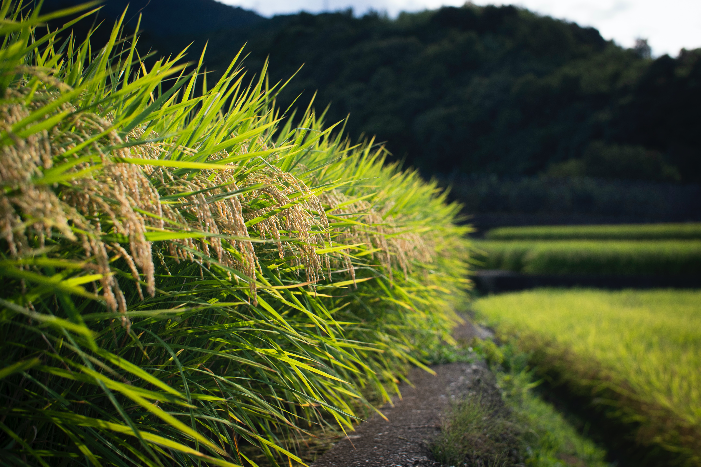

Rice
Best Rice Farm Practices: There are 3 methods of planting upland rice namely; Drill, Dibble, Broadcast. Drilling and Dibbling allow straight row planting that ensures optimum plant population and use of a hoe for weeding
Best Fertilizers for Rice Farms: Rice should not be continuously grown on the same fields, it should be rotated with other crops to conserve soil fertility. Composted organic material such as rice straw and animal manure can be added to the soil to supplement soil fertility. Fertilizer rates and regimes 55-23-0 NPK kg / ha *DAG (Days After Germination) Fertilizer 15-20 DAG 55-65 DAG DAP(18-46-0) 50 kg / ha (20 kg / acre) 0 Urea(46-0-0) 50 kg / ha (20 kg / acre) 50 kg / ha (20 kg / acre)
Harvesting and Storage Techniques for Rice: The stem of the rice is cut close to the ground by serrated sickles. This method of harvesting is much faster than harvesting by panicle using a knife. Harvesting should be done when 80-85% of the grains are straw coloured and the grains in the lower part of the panicle are in the hard dough stage. Threshing can be done by beating with sticks against a log or using thresher. However, threshing by beating increases the chances of broken grains at milling.